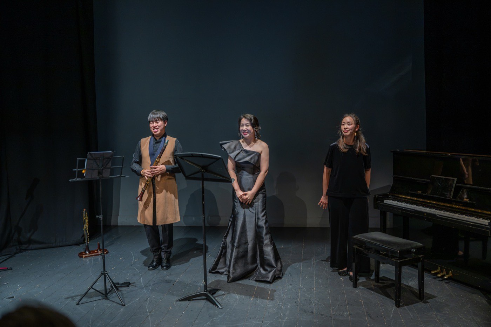

첫 공적 지원
South Dublin Live 2026
SDCC 예술과가 선정했습니다. 저희 주머니 밖에서 처음으로 돈이 나온 일입니다.
다가오는 일정
12주 과정입니다. 악기를 한 번도 잡아 본 적 없어도, 악보를 못 읽어도 됩니다.
소프라노·해금·클라리넷·피아노 — 쇼팽, 피에르네, 슈포어, 슈베르트와 한국 가곡.
2026년 12월 — 가족과 친구를 초대한 음악회로 Mulhuddart 첫 기수를 마무리합니다. 자세한 내용은 추후 안내합니다.
올해

SDCC 예술과가 선정했습니다. 저희 주머니 밖에서 처음으로 돈이 나온 일입니다.

병원 아트리움에서 30분, 어쿠스틱, 오가며 듣는 형식. 해금 김재원과 함께, 환자와 가족과 직원을 위해.

Rua Red 퍼포먼스 스페이스에서 클라리넷·피아노·소프라노로 60분. 무료 입장.
기록
한 해에 오선 하나로 그린 연대기와 그 아래의 표. 지나온 길, 계획했지만 하지 못한 것, 적어 두지 못한 것까지 거기 있습니다.